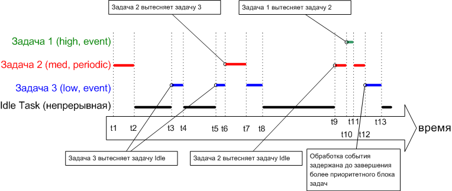

1.10. Обзор алгоритмов шедулинга (планирования выполнения задач)
Приоритетное планирование запуска задач с вытеснением, вытесняющая многозадачность (Prioritized Preemptive Scheduling)
Примеры в этой главе иллюстрируют, как и когда FreeRTOS выбирает, какая задача должна находиться в состоянии Running:
Схема шедулинга такого типа называется "вытесняющая многозадачность с фиксированными приоритетами" (Fixed Priority Preemptive Scheduling). "Фиксированные приоритеты" - это потому, что каждой задаче назначен приоритет, который не может быть изменен самим ядром системы, только задачи могут менять приоритет (т. е. только код пользователя). "Вытесняющая" (preemptive) - потому что задача, вошедшая в режим Ready или имеющая измененный приоритет, всегда вытеснит другую задачу из состояния Running, если она имеет более низкий приоритет.
Задачи могут ждать в состоянии Blocked какого-то события, и переместятся обратно в состояние Ready, когда это событие произойдет. События времени срабатывают в определенное время, например когда истекает время блокировки (время нахождения в состоянии Blocked). Это обычно используется для реализации периодических действий или для отсчета таймаута. События синхронизации возникают, когда задача или обработчик прерывания посылает информацию в очередь или в один из нескольких типов семафоров. Это обычно используется для обработки асинхронной активности, как например поступление порции данных от периферийного устройства.
Рисунок ниже демонстрирует все эти типы поведения диаграммой выполнения гипотетического приложения.

1. Idle Task (задача ожидания)
Задача ожидания запускается с самым низким возможным приоритетом (приоритет 0), поэтому она вытесняется в любой момент времени задачей с более высоким приоритетом, которая входит в состояние Ready - например в моменты времени t3, t5 и t9.
2. Задача 3
Задача 3 является задачей, управляемой по событию, которая выполняется с относительно низким приоритетом, но выше приоритета Idle Task. Задача 3 проводит почти все время в ожидании (состояние Blocked) интересующего события, переходя из состояния Blocked в состояние Ready каждый раз при наступлении события. Все механизмы обмена данными между задачами во FreeRTOS (очереди, семафоры, и т. п.) могут использоваться как сигнализирующие события для разблокировки задач.
События происходят в моменты времени t3, t5, и также где-то между t9 и t12. События t3 и t5 обрабатываются немедленно, так как в это время задача 3 является задачей с наивысшим приоритетом, готовой к запуску. Событие, которое произойдет между t9 и t12, не будет обработано до времени t12, потому что до t12 все еще работают задачи 1 и 2 с более высоким приоритетом, чем задача 3. Только в момент времени t12 обе задачи - и 1, и 2 - находятся в состоянии Blocked, что делает задачу 3 задачей с наивысшим приоритетом, которая находится в состоянии Ready.
3. Задача 2
Задача 2 является периодической, она запускается с более высоким приоритетом, чем задача 3, но у неё приоритет ниже, чем у задачи 1. Интервал периода запуска такой, что задаче 2 нужно запуститься в моменты времени t1, t6 и t9.
В момент времени t6 задача 3 находится в состоянии Running, но задача 2 имеет более высокий приоритет, поэтому вытесняет задачу 3 и запускается немедленно. Задача 2 завершает свою работу и снова входит в режим Blocked в момент времени t7, и тогда задача 3 возвращается в состояние Running для завершения обработки. Задача 3 блокирует саму себя в момент времени t8.
4. Задача 1
Задача 1 также является задачей, запускаемой по событию. Она выполняется с самым высоким приоритетом, поэтому может вытеснять любую другую задачу в системе. Для задачи 1 показано событие только в момент времени t10, когда она вытесняет задачу 2. Задача 2 может завершить свою обработку только после того, как задача 1 снова войдет в режим Blocked (момент времени t11).
Выбор задачи на основе приоритета
Главное правило - для функций жесткого реалтайма назначаются приоритеты выше, чем для функции мягкого реалтайма. Однако нужно принимать во внимание и другие характеристики кода, такие как время выполнения и загрузка процессора вычислениями - чтобы обеспечить выполнение приложением функции жесткого реалтайма (обеспечить требуемое время реакции системы).
Техника RMS (Rate Monotonic Scheduling, шедулинг по монолитной скорости) использует общее назначение приоритета, и задает для каждой задачи уникальный приоритет в соответствии со скоростью периодического выполнения. Самый низкий приоритет назначается задаче, у которой самая низкая частота периодического выполнения. Назначение приоритетов таким способом показывает максимальную 'управляемость' шедулером всего приложения, однако вариации времени выполнения и тот факт, что не все задачи являются периодическими, делает очень сложным прямой расчет поведения приложения.
Кооперативная многозадачность (Co-operative Scheduling)
Когда используется чистый кооперативный шедулер, то переключение контекста (смена выполняемой задачи) произойдет только либо если задача перейдет из режима Running в режим Blocked, либо если задача в состоянии Running явно сделает вызов taskYIELD(). Задачи не вытесняются, и задачи с одинаковым приоритетом не делят автоматически время процессора. Поэтому кооперативная многозадачность проще, но её использование может привести к получению менее отзывчивой системы.
Возможна также гибридная схема, где обработчик прерывания используется исключительно для переключения контекста. Это позволяет событиям синхронизации вызывать вытеснение, но только не для событий времени. В результате получается система с вытеснением задач и без привязки ко времени. Такая конфигурация может быть выбрана из-за её высокой эффективности и из-за применения общей конфигурации шедулера.